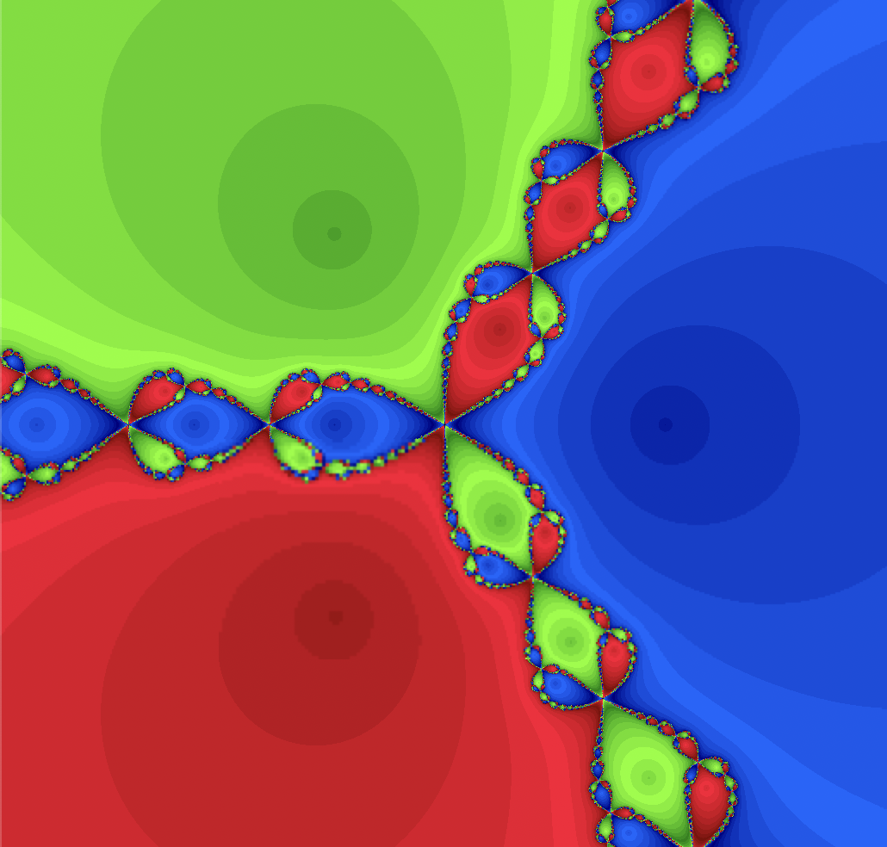
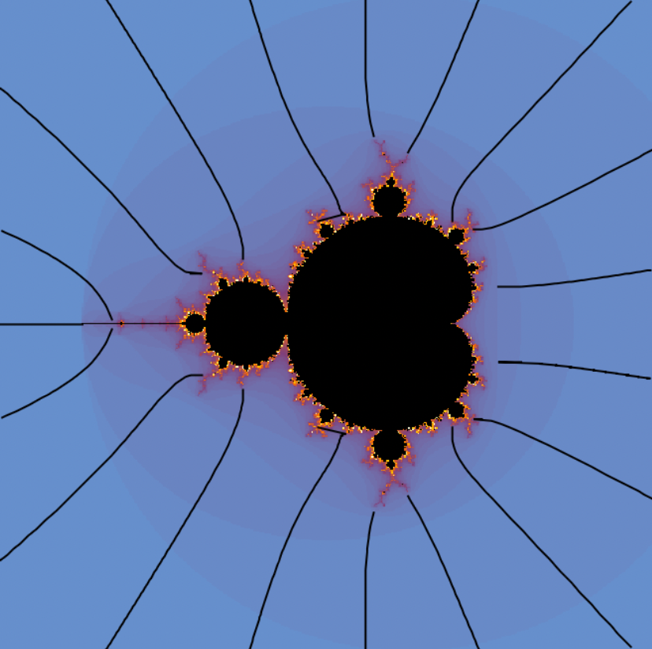
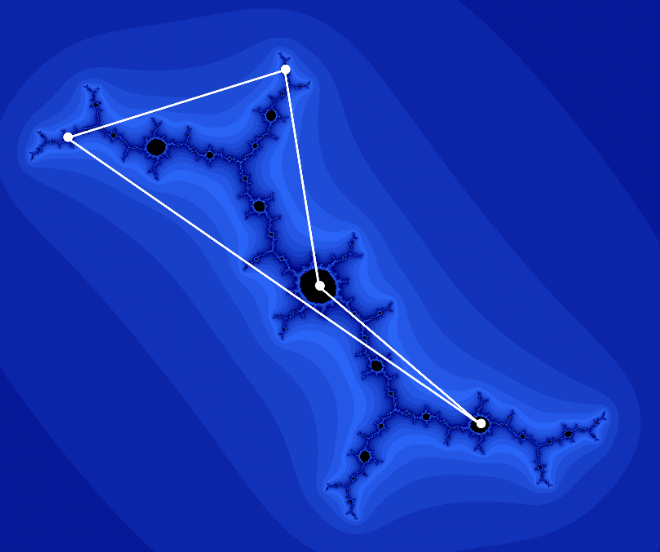

Expositions
Undergraduate senior thesis: Quadratic Dynamics, the Mandelbrot Set, and Local Connectivity.
Course notes: introductory complex analysis
Lattés Maps and Solving Polynomial Equations

The Julia set for Newton's method applied to \(z^3 - 1\). Generated with FractalStream.

External rays landing on the Mandelbrot set.

A satellite renormalizable quadratic polynomial.